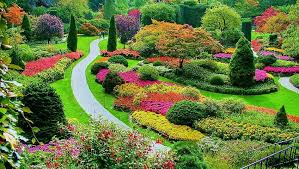

Acerca de Jardinería Sostenible¶
La jardinería sostenible es una forma de cultivo que se centra en el respeto al medio ambiente, la eficiencia en el uso de recursos y la biodiversidad. A través de prácticas como el compostaje, el uso de plantas nativas y la reducción de plaguicidas, podemos contribuir a un entorno más saludable.
Principales prácticas¶
- Uso de compost natural
- Siembra de plantas nativas
- Conservación del agua
Imagen de un Jardín Sostenible¶

Note
La jardinería sostenible no solo beneficia al jardín, sino que también tiene un impacto positivo en el ecosistema local.
Plantas¶
La Lavanda es una planta aromática que atrae polinizadores como abejas y mariposas...
El Aloe Vera es una planta suculenta conocida por sus propiedades medicinales...
El Tomate es una planta comestible que requiere mucho sol y riego constante...